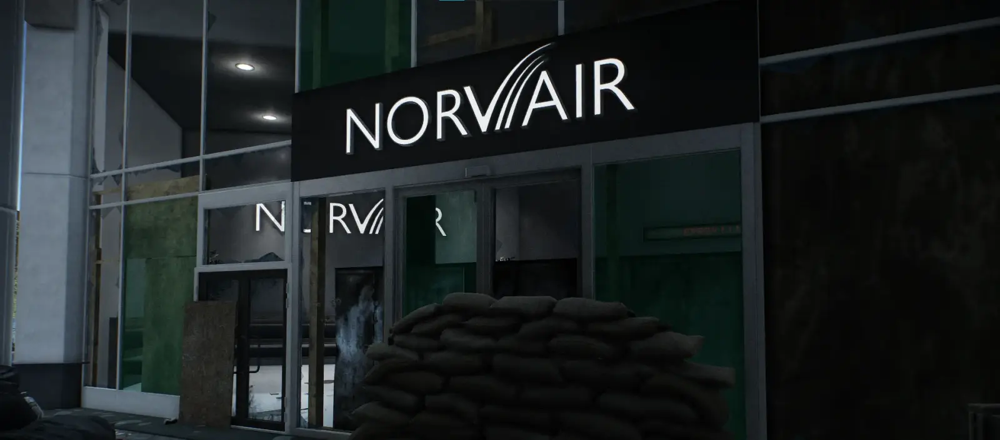
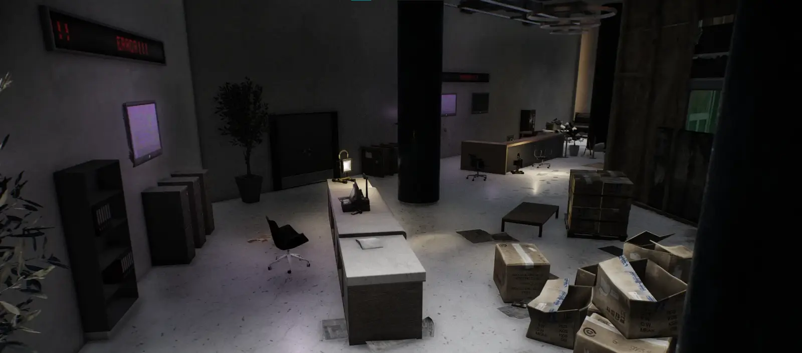
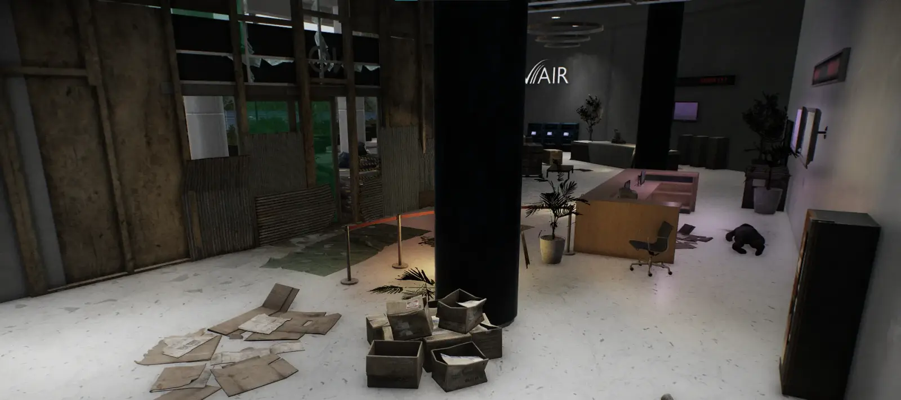

Addon
NORVAIR (Ground Zero)
- Downloads
- 74
This addon opens up the NORVAIR store on ground zero - it requires a new key to open.
Lots of loot spawns/containers/objects are inside, so the key is costly, but can be found in vanilla containers, as well as a couple of dedicated rare loose key spawns near the store.
There is also a key for the cash register.
Images



Version
1.0.0
Parent mod 4.0.13
74 downloads36.7 KB
Initial release.
VirusTotal: report 1